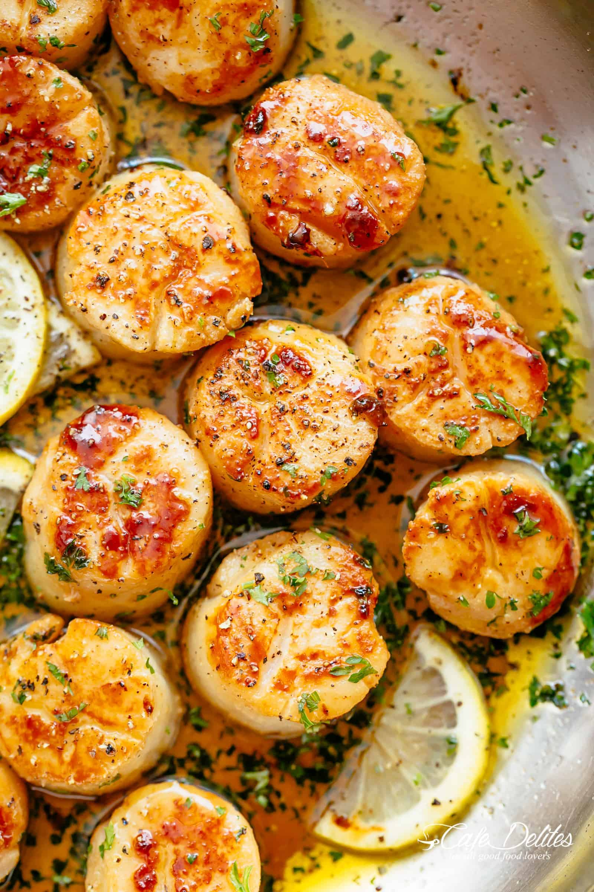

Lemon Butter Scallops

Scallops sauteed in butter and garlic that will meth in your mouth.
Delicious scallops in a light butter and garlic sauce to melt your troubles away.
Enjoy a nice and simple meal that will take only 20 mins to make.
- Butter
- Fresh Garlic
- Fresh Lemon Juice
- Scallops
- Salt
- Pepper
Steps
- Melt butter in large skillet of medium-high heat.
- Stir in garlic and cook until fragrant.
- Add scallops, cook each side for 3 minutes until firm and opaque.
- Remove scallops to make sauce with remaining butter.
- Whisk in salt, pepper, and lemon juice.